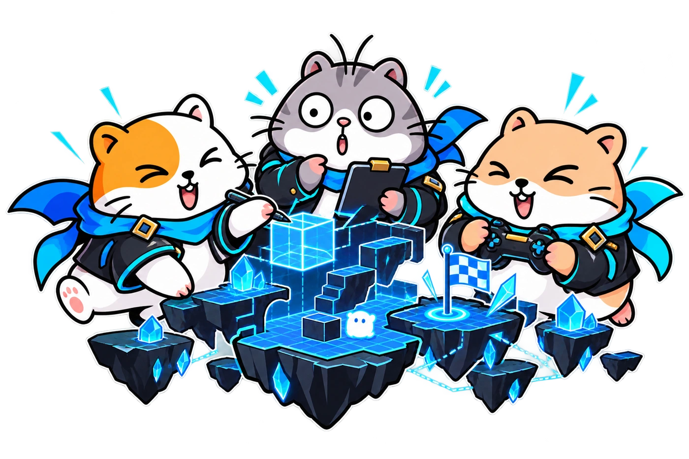

ทักษะที่ได้ฝึก
การคิดเป็นขั้นตอน การออกแบบ การเขียนคำสั่ง และการทดสอบ ตามสาย Game, Web/App หรือ IoT
FOR PARENTS.
เลือกสาย Game, Web/App หรือ IoT ฝึกคิด สร้างโปรเจกต์ และทำงานร่วมกับคนอื่น
LOOK AT WHAT THEY BUILD.
เริ่มจากพื้นฐานของสายที่เลือก สร้างต้นแบบให้ทำงานได้ แล้วพัฒนาจากการใช้งานจริง พร้อมฝึกนำเสนอผลงาน

การคิดเป็นขั้นตอน การออกแบบ การเขียนคำสั่ง และการทดสอบ ตามสาย Game, Web/App หรือ IoT
วางแผน แบ่งบทบาท ส่งงาน และอธิบายสิ่งที่ตนเองรับผิดชอบ
เก็บชิ้นงาน เดโม และเรื่องราวการพัฒนา เพื่อประกอบการเล่าผลงานในพอร์ต
YOUR NEXT LEVEL STARTS HERE.
ให้หนึ่งปีนี้มีทั้งทักษะ และโปรเจกต์ที่คุณสร้าง
และเรื่องราวที่คุณนำไปเล่าต่อได้
สอบถามรุ่นเรียน ตารางเรียน รูปแบบการเรียน และเงื่อนไขค่าใช้จ่ายผ่าน LINE ก่อนสมัคร